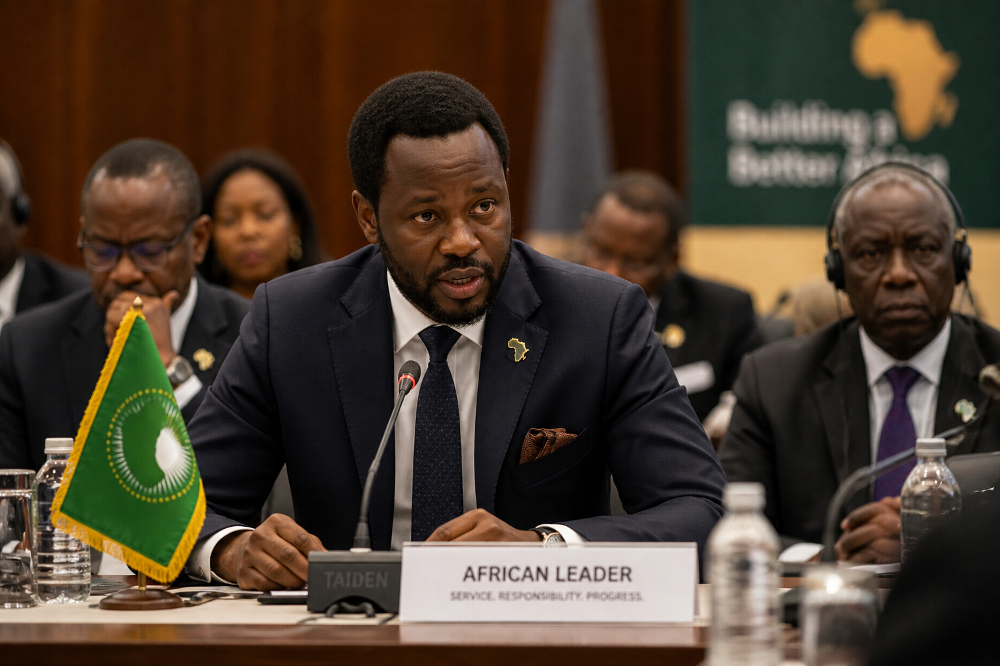

Lead with integrity
Promote thoughtful leadership grounded in ethics, responsibility, and trust.
African Leaders Connection
African Leaders Connection is a professional platform dedicated to uniting leaders, innovators, and communities across Africa to drive meaningful change, collaboration, and sustainable development.

What We Stand For
The platform is shaped around practical leadership values: strong character, collaborative thinking, and a clear commitment to African advancement through ideas that can be shared, understood, and acted on.
Promote thoughtful leadership grounded in ethics, responsibility, and trust.
Create a meeting point for dialogue between citizens, professionals, and future leaders.
Translate ideas into stories, projects, and partnerships that make progress visible.
Platform Purpose
African Leaders Connection exists to highlight what responsible leadership looks like in practice. It is a place for thoughtful ideas, stories of service, and a stronger public narrative around African possibility.
Rather than chasing noise, the platform prioritizes clarity, substance, and connection. Every page is meant to reinforce a simple idea: leadership should improve people's lives and strengthen the communities it touches.
Advocacy in Action
African Leaders Connection promotes principled advocacy that empowers young leaders, strengthens communities, and encourages ethical leadership across public life.
Mentorship, civic confidence, and values-based growth for emerging African changemakers.
Community voices, service-minded action, and practical development ideas that support shared progress.
Responsible leadership, accountability, and public trust as foundations for lasting impact.
Explore the Site
Move from the homepage into the platform story, leadership themes, community pathways, and contact options without broken links or mismatched layouts.
Understand the story, founder perspective, and the values behind African Leaders Connection.
Visit About Vision and missionSee the long-term direction, strategic priorities, and core values guiding the platform.
Visit Vision AdvocacyExplore the platform's public voice around leadership, community responsibility, and African progress.
Visit Advocacy Leadership themesExplore the ideas, principles, and conversation areas shaping the leadership agenda.
Visit Leadership Success storiesDiscover the narrative focus used to spotlight progress, courage, and practical impact.
Visit Stories Community pathwaysLearn how students, professionals, and partners can participate in the network.
Visit Community Projects and initiativesReview the types of collaborations and programs the platform is designed to support.
Visit Projects Hobbies and interestsSee the personal and creative interests that keep the leadership vision grounded and human.
Visit Hobbies Editorial directionFollow the ideas, essays, and leadership reflections planned for future publishing.
Visit Blog Contact and collaborationReach out for conversations, partnerships, speaking opportunities, or community engagement.
Visit ContactJoin the Movement
Join a purpose-driven network shaping leadership, unity, and collaboration across Africa.